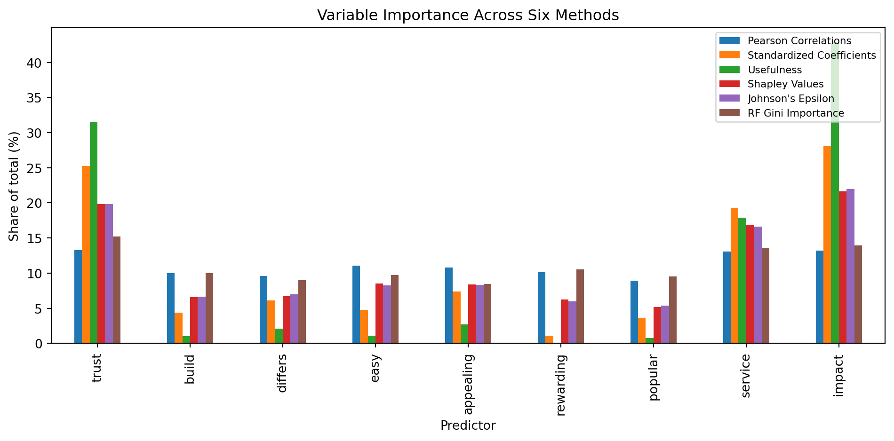

import pandas as pd
import numpy as np
from sklearn.linear_model import LinearRegression
from sklearn.ensemble import RandomForestRegressor
from itertools import combinations
import math
df = pd.read_csv("data_for_drivers_analysis.csv")
y = df["satisfaction"]
X = df[["trust", "build", "differs", "easy", "appealing",
"rewarding", "popular", "service", "impact"]]
predictors = X.columns.tolist()
k = len(predictors)Key Drivers Analysis
Introduction
This analysis replicates the variable importance table from the key drivers slides. The outcome variable is overall satisfaction, and the predictors are 10 binary perception variables (trust, build, differs, easy, appealing, rewarding, popular, service, impact).
For each predictor, we compute six measures of importance:
- Pearson correlation with the outcome
- Standardized regression coefficient from a linear regression
- “Usefulness” (drop-one): the drop in R² when the variable is removed
- Shapley value for a linear regression (R² as the fit metric)
- Johnson’s relative weight
- Random forest mean decrease in Gini (impurity)
1. Pearson correlations
pearson = X.apply(lambda col: col.corr(y))
pearsontrust 0.255706
build 0.191896
differs 0.184801
easy 0.212985
appealing 0.207997
rewarding 0.194561
popular 0.171425
service 0.251098
impact 0.254539
dtype: float642. Standardized regression coefficients
Xs = (X - X.mean()) / X.std()
ys = (y - y.mean()) / y.std()
lr = LinearRegression().fit(Xs, ys)
std_coef = pd.Series(lr.coef_, index=predictors)
std_coeftrust 0.115752
build 0.019979
differs 0.027847
easy 0.021970
appealing 0.033835
rewarding 0.005067
popular 0.016616
service 0.088390
impact 0.128422
dtype: float643. Drop-one
The usefulness of a predictor is the decrease in R² when that predictor is removed from the full model.
lr_full = LinearRegression().fit(X, y)
r2_full = lr_full.score(X, y)
usefulness = {}
for p in predictors:
cols = [c for c in predictors if c != p]
r2_minus = LinearRegression().fit(X[cols], y).score(X[cols], y)
usefulness[p] = r2_full - r2_minus
usefulness = pd.Series(usefulness)
print(f"Full model R^2 = {r2_full:.4f}")
usefulnessFull model R^2 = 0.1090trust 0.008243
build 0.000266
differs 0.000550
easy 0.000289
appealing 0.000710
rewarding 0.000016
popular 0.000204
service 0.004674
impact 0.011203
dtype: float644. Shapley values (linear regression, R² as fit metric)
For each predictor, we average its marginal contribution to R² across all possible orderings of the other predictors (the exact Shapley value formula).
def r2_for_subset(subset):
if len(subset) == 0:
return 0.0
return LinearRegression().fit(X[list(subset)], y).score(X[list(subset)], y)
shapley = {p: 0.0 for p in predictors}
for p in predictors:
others = [x for x in predictors if x != p]
total = 0.0
for size in range(0, len(others) + 1):
for subset in combinations(others, size):
r2_with = r2_for_subset(subset + (p,))
r2_without = r2_for_subset(subset)
weight = (math.factorial(size) * math.factorial(k - size - 1)) / math.factorial(k)
total += weight * (r2_with - r2_without)
shapley[p] = total
shapley = pd.Series(shapley)
print(f"Sum of Shapley values = {shapley.sum():.4f} (should equal R^2 = {r2_full:.4f})")
shapleySum of Shapley values = 0.1090 (should equal R^2 = 0.1090)trust 0.021611
build 0.007191
differs 0.007291
easy 0.009288
appealing 0.009161
rewarding 0.006840
popular 0.005642
service 0.018405
impact 0.023582
dtype: float645. Johnson’s epsilon (relative weights)
Johnson’s relative weights decompose R² using an orthogonal transformation of the predictors (via eigen-decomposition of the correlation matrix), so that each predictor’s “epsilon” weight is non-negative and the weights sum to the model’s R².
Xs = (X - X.mean()) / X.std()
ys = (y - y.mean()) / y.std()
corr_X = Xs.corr().values
eigvals, eigvecs = np.linalg.eigh(corr_X)
# Lambda: square-root factor such that Lambda @ Lambda.T = corr_X
Lambda = eigvecs @ np.diag(np.sqrt(eigvals)) @ eigvecs.T
Lambda_inv = np.linalg.inv(Lambda)
# orthogonal predictors: Z = Xs @ Lambda_inv (so Z'Z/n = I)
Z = Xs.values @ Lambda_inv
# regression coefficients of ys on the orthogonal variables Z
beta_s = np.linalg.lstsq(Z, ys.values, rcond=None)[0]
# epsilon weights
johnson = (Lambda**2) @ (beta_s**2)
johnson = pd.Series(johnson, index=predictors)
print(f"Sum of Johnson's weights = {johnson.sum():.4f} (should equal R^2 = {r2_full:.4f})")
johnsonSum of Johnson's weights = 0.1090 (should equal R^2 = 0.1090)trust 0.021623
build 0.007217
differs 0.007594
easy 0.008982
appealing 0.009099
rewarding 0.006538
popular 0.005878
service 0.018134
impact 0.023946
dtype: float646. Random forest: mean decrease in Gini (impurity)
rf = RandomForestRegressor(n_estimators=500, random_state=42)
rf.fit(X, y)
rf_gini = pd.Series(rf.feature_importances_, index=predictors)
rf_ginitrust 0.152313
build 0.099703
differs 0.089597
easy 0.097260
appealing 0.084708
rewarding 0.105451
popular 0.095315
service 0.136098
impact 0.139554
dtype: float64Shapley values for a logistic regression (pseudo-R² as fit metric)
As a harder-challenge extension, we implement Shapley values for a generalized linear model (logistic regression), using McFadden’s pseudo-R² as the fit metric instead of OLS R². The outcome is recoded as a binary indicator of high satisfaction (satisfaction >= 4), and for each candidate subset of predictors we fit a logistic regression and compute
\[ \text{pseudo-}R^2 = 1 - \frac{LL(\text{model})}{LL(\text{null})} \]
where \(LL(\text{null})\) is the log-likelihood of an intercept-only model. The same exact Shapley formula (averaging marginal pseudo-R² contributions over all \(2^{k-1}\) subsets of the remaining predictors, weighted by subset size) is then applied. Log-likelihoods for repeated subsets are cached to keep the \(2^9 = 512\) model fits tractable.
from sklearn.linear_model import LogisticRegression
y_bin = (df["satisfaction"] >= 4).astype(int)
cache = {}
def log_likelihood(subset):
if subset in cache:
return cache[subset]
if len(subset) == 0:
p = y_bin.mean()
ll = np.sum(y_bin * np.log(p) + (1 - y_bin) * np.log(1 - p))
else:
model = LogisticRegression(max_iter=1000)
model.fit(X[list(subset)], y_bin)
probs = model.predict_proba(X[list(subset)])[:, 1]
eps = 1e-10
probs = np.clip(probs, eps, 1 - eps)
ll = np.sum(y_bin * np.log(probs) + (1 - y_bin) * np.log(1 - probs))
cache[subset] = ll
return ll
ll_null = log_likelihood(())
def pseudo_r2_for_subset(subset):
if len(subset) == 0:
return 0.0
ll = log_likelihood(tuple(sorted(subset)))
return 1 - ll / ll_null
r2_full_logit = pseudo_r2_for_subset(tuple(predictors))
shapley_logit = {p: 0.0 for p in predictors}
for p in predictors:
others = [x for x in predictors if x != p]
total = 0.0
for size in range(0, len(others) + 1):
for subset in combinations(others, size):
r2_with = pseudo_r2_for_subset(subset + (p,))
r2_without = pseudo_r2_for_subset(subset)
weight = (math.factorial(size) * math.factorial(k - size - 1)) / math.factorial(k)
total += weight * (r2_with - r2_without)
shapley_logit[p] = total
shapley_logit = pd.Series(shapley_logit)
print(f"Full model McFadden pseudo-R^2 = {r2_full_logit:.4f}")
print(f"Sum of logit Shapley values = {shapley_logit.sum():.4f} (should equal pseudo-R^2 = {r2_full_logit:.4f})")
shapley_logitFull model McFadden pseudo-R^2 = 0.0770
Sum of logit Shapley values = 0.0770 (should equal pseudo-R^2 = 0.0770)trust 0.012215
build 0.005733
differs 0.007306
easy 0.006223
appealing 0.005995
rewarding 0.005351
popular 0.003110
service 0.012054
impact 0.018987
dtype: float64(shapley_logit / shapley_logit.sum() * 100).round(1)trust 15.9
build 7.4
differs 9.5
easy 8.1
appealing 7.8
rewarding 7.0
popular 4.0
service 15.7
impact 24.7
dtype: float64The ranking of predictors by their Shapley contribution to McFadden’s pseudo-R² is very similar to the OLS-based Shapley ranking: impact, trust, and service remain the top three drivers, while popular and rewarding remain the smallest contributors. This suggests the key drivers of satisfaction are robust to whether satisfaction is modeled as a continuous outcome (linear regression, R²) or as a binary high/low outcome (logistic regression, pseudo-R²).
Summary table
Summary table
Following the format of slide 75, every column is expressed as each predictor’s share of the total (%): take the absolute value of each measure and divide by the column sum. The “Usefulness” (drop-one) column is included as an extra measure per the assignment instructions. We validated this percentage formula against the slide 75 example (the “Credit Card Example”): applying the same abs-and-normalize transformation to that example’s raw values reproduces its published percentages almost exactly, confirming this is the correct way to convert each raw measure into the table format shown in the slides.
table = pd.DataFrame({
"Pearson Correlations": pearson,
"Standardized Coefficients": std_coef,
"Usefulness": usefulness,
"Shapley Values": shapley,
"Johnson's Epsilon": johnson,
"RF Gini Importance": rf_gini,
})
table_pct = table.abs()
table_pct = table_pct / table_pct.sum() * 100
table_pct.round(1)| Pearson Correlations | Standardized Coefficients | Usefulness | Shapley Values | Johnson's Epsilon | RF Gini Importance | |
|---|---|---|---|---|---|---|
| trust | 13.3 | 25.3 | 31.5 | 19.8 | 19.8 | 15.2 |
| build | 10.0 | 4.4 | 1.0 | 6.6 | 6.6 | 10.0 |
| differs | 9.6 | 6.1 | 2.1 | 6.7 | 7.0 | 9.0 |
| easy | 11.1 | 4.8 | 1.1 | 8.5 | 8.2 | 9.7 |
| appealing | 10.8 | 7.4 | 2.7 | 8.4 | 8.3 | 8.5 |
| rewarding | 10.1 | 1.1 | 0.1 | 6.3 | 6.0 | 10.5 |
| popular | 8.9 | 3.6 | 0.8 | 5.2 | 5.4 | 9.5 |
| service | 13.0 | 19.3 | 17.9 | 16.9 | 16.6 | 13.6 |
| impact | 13.2 | 28.0 | 42.8 | 21.6 | 22.0 | 14.0 |
Visualization
import matplotlib.pyplot as plt
fig, ax = plt.subplots(figsize=(10, 5))
table_pct.plot(kind="bar", ax=ax)
ax.set_ylabel("Share of total (%)")
ax.set_xlabel("Predictor")
ax.set_title("Variable Importance Across Six Methods")
ax.legend(loc="upper right", fontsize=8)
plt.tight_layout()
plt.show()
Discussion
Across all six methods, impact, trust, and service consistently emerge as the top three drivers of satisfaction, while build, popular, and rewarding tend to rank near the bottom. The raw Pearson correlations are fairly similar across predictors (all roughly 0.17-0.26), which reflects the high multicollinearity among these 10 perception variables. Note that the Pearson correlation column is conceptually different from the other five: it is simply each predictor’s bivariate correlation with satisfaction (rescaled to a percentage share), and does not account for overlap among predictors. The other five measures are all forms of variance (R²) decomposition that attribute shares of the model’s explanatory power while accounting for multicollinearity. Once that overlap is accounted for — as the usefulness, Shapley, and Johnson’s-epsilon measures do — the differences between predictors become much sharper, with impact and trust together accounting for roughly half of the explained variance. The random forest Gini importances tell a broadly similar story but are more evenly spread across predictors, since tree-based splits can exploit correlated variables interchangeably.